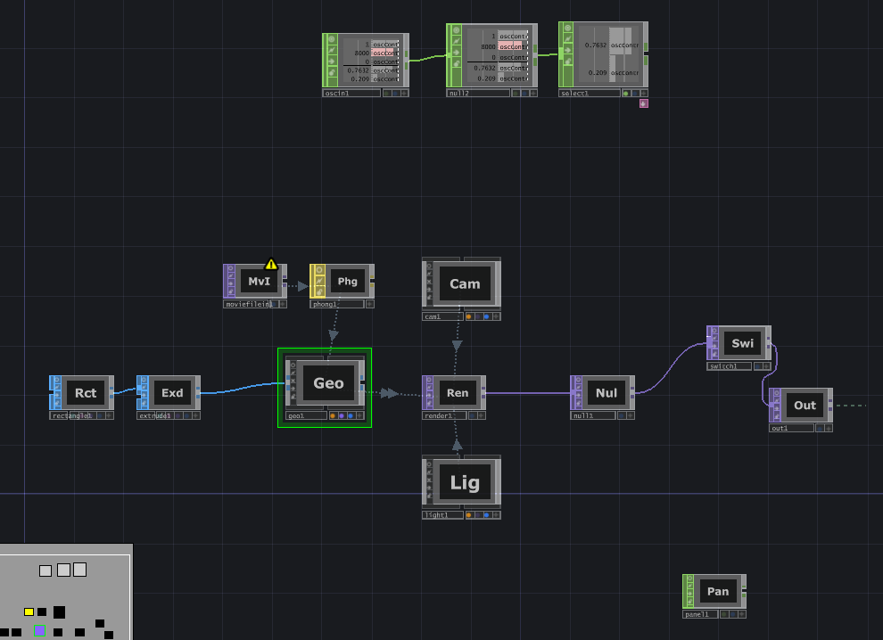
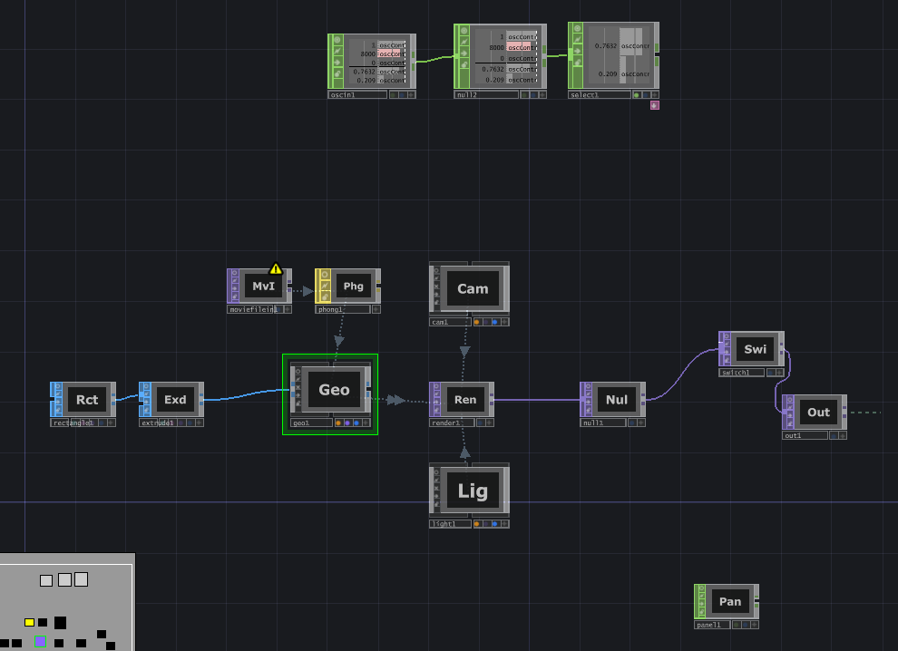
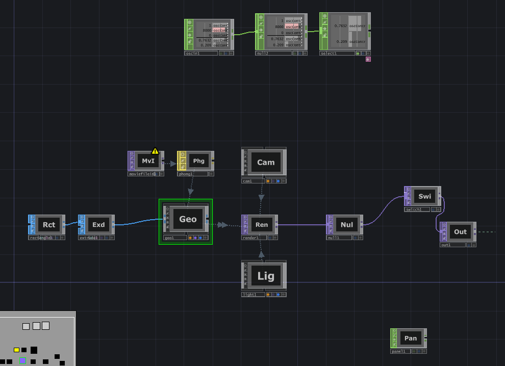

Elsaluz Andrade Rivera, Camila Díaz Pavón, Laura Andrea Londoño Sinisterra
Año 2025
La obra adopta la forma de una instalación interactiva compuesta por proyecciones múltiples y un sistema de control mediante un dispositivo móvil. El espacio se transforma gradualmente en un entorno sobrecargado de estímulos digitales, simulando un entorno liminal que transiciona desde lo cotidiano hasta lo abrumador.
Nuestra obra trata sobre la soledad digital, en como gracias a una cultura altamente estimulante, los vinculos sociales se fracturan y es cada vez mas dificil relacionarse con la gente, como es mas facil atentar contra alguien que está detrás de una pantalla y al mismo tiempo darle toda tu atencion y afecto.
Auscencia es una instalación artistica que intenta sumergir al espectador en una pesadilla digital de la que no puede escapar, usando el movimiento de swipe en el telefono intentará salir de ese lugar quitando una pestaña tras otra, pero que al final lo unico que hace es saturarlo cada vez más de contenido hasta que lo unico que pueda ver sea notificación tras notificación.
Imágenes:
